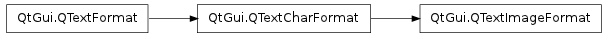

QTextImageFormat ¶

Synopsis ¶
Detailed Description ¶
The PySide.QtGui.QTextImageFormat class provides formatting information for images in a PySide.QtGui.QTextDocument .
Inline images are represented by an object replacement character (0xFFFC in Unicode) which has an associated PySide.QtGui.QTextImageFormat . The image format specifies a name with PySide.QtGui.QTextImageFormat.setName() that is used to locate the image. The size of the rectangle that the image will occupy is specified using PySide.QtGui.QTextImageFormat.setWidth() and PySide.QtGui.QTextImageFormat.setHeight() .
Images can be supplied in any format for which Qt has an image reader, so SVG drawings can be included alongside PNG, TIFF and other bitmap formats.
- class PySide.QtGui. QTextImageFormat ¶
- class PySide.QtGui. QTextImageFormat ( format )
- class PySide.QtGui. QTextImageFormat ( QTextImageFormat )
-
Parameters: - format – PySide.QtGui.QTextFormat
- QTextImageFormat – PySide.QtGui.QTextImageFormat
Creates a new image format object.
Creates a new image format with the same attributes as the given text format.
- PySide.QtGui.QTextImageFormat. height ( ) ¶
-
Return type: PySide.QtCore.qreal Returns the height of the rectangle occupied by the image.
- PySide.QtGui.QTextImageFormat. name ( ) ¶
-
Return type: unicode Returns the name of the image. The name refers to an entry in the application’s resources file.
- PySide.QtGui.QTextImageFormat. setHeight ( height ) ¶
-
Parameters: height – PySide.QtCore.qreal Sets the height of the rectangle occupied by the image.
- PySide.QtGui.QTextImageFormat. setName ( name ) ¶
-
Parameters: name – unicode Sets the name of the image. The name is used to locate the image in the application’s resources.
See also
- PySide.QtGui.QTextImageFormat. setWidth ( width ) ¶
-
Parameters: width – PySide.QtCore.qreal Sets the width of the rectangle occupied by the image.
- PySide.QtGui.QTextImageFormat. width ( ) ¶
-
Return type: PySide.QtCore.qreal Returns the width of the rectangle occupied by the image.